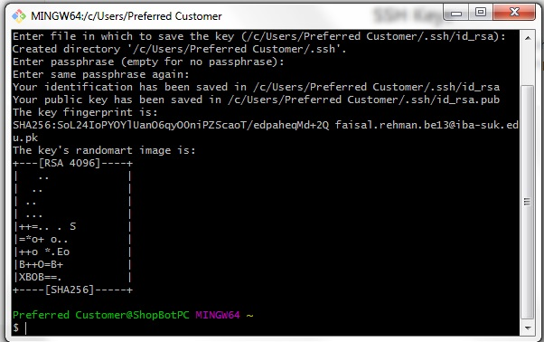

First Week Task
- Work through a git tutorial
- Build a personal site in the class archive describing you and your final project
In the First Week I have to design the Website to uplooding the week based Assignements for the Assessment.There are many differnet ways to make a Personal website, in which I get a templates From Google that is drag and drop possibilities and a little bit coding to make a responsive website, by using that template ,So I have planed to design Personal web page, though it was bit difficult to work with html Programming becuase when I was in First year of Bachelor's that time I have used in ICT Course,But nonetheless finally, I have design the Personal Web Page with the help of Friend and Google.
I have decided to work with Sublime Text. So I think my Personal website has three pages. Home/ Assingmnets, final project and about me/ Bio. I have completed this task with the help of Google and www.w3school.com and using SubLime Text Eidtor.
First Plan for Website:
For The HTML Programming I used Sublime Text Editor

First look of my website
After the Creating website, than the Second part is to Upload Personal website on gitlab.
- To Downlaod and install Git Bash
- Create the SSH key by using Putty Generator.
- To upload the website at Gitlab Site
First of all I Have downlaod the Git Bash and install Git bash at My Computer
Installation of git bash:
This is the Main Page of the Git lab Where I ahve to upload my Website.
After the Git bash Installition the Next step is to create the SSH key on Git Lab.pute her and then add they key
After the Adding SSH key this Window is Appeared
Now Uplaod step is to upload the website using Git Bash and Fellow the below steps:
Used following Git commands to upload the website. All the command that I have used can be seen in the image given below.
- cd ~/Desktop/fablab_data
- git pull
- git status
- git add .
- git commit -m "
" - git push
Cd Command is used to reach at the directory where the clone is, in my case the clone is at Desktop/fablab_data.
git pull is the command which is used to get the data from the git server and update the clone that is in my computer. Here we are also using it to update clone.
This command is bit simple as the name suggest that it tell us the current status of our fils that what changes have been performed and what have not. These changes are between my last upload to the git and current update. This command also show the from my directory which file are tracked by Git.
This command is used to add new changes in all directories and subdirectories. Actually we are doing this to update our page with the new files we want to add.
This command is use to track the changes which are perform at Git. And "-m" is to attach a message which can help me in future that why I update my website this time. I use to write commit like " My First Upload".
When we are ready to update our page finally this command complete the process by pushing all the data to the website. here i have attached all images of My first Week Task.

After the setup now i am going to add/ copy the SSHkey form gitlab :
now after the pasting get clone and SSHKey here so we get this result:
Git Clone from Gitlab Copy :
Now web show that this is correct and masterss:
after this Now check the using Git Status Command:
Now Git Add:
Now for the Push the Web page using Git push Command :
Ater the Whole Process my file Are Upload and update on the Gitlab:
this is the Final Look of my Webpage on Fab-Academy:
This Week was very Interesting and Learning week as point of view for the Web Developing and Design, I have Learned abut the HTML, PHP and other languages for the Web Design.